6. Annexes
Nous présentons ici comment installer les outils utilisés dans ce document sur des machines windows 7 à 10. Le lecteur s'adaptera à son propre environnement.
6.1. Intallation de l'IDE Arduino
Le site officiel de l'Arduino est [http://www.arduino.cc/]. C'est là qu'on trouvera l'IDE de développement pour les Arduinos [http://arduino.cc/en/Main/Software] :
 |  |
Le fichier téléchargé [1] est un zip qui une fois décompressé donne l'arborescence [2]. On pourra lancer l'IDE en double-cliquant sur l'exécutable [3].
6.2. Intallation du pilote (driver) de l'Arduino
Afin que l'IDE puisse communiquer avec un Arduino, il faut que ce dernier soit reconnu par le PC hôte. Pour cela, on pourra procéder de la façon suivante :
- brancher l'Arduino sur un port USB de l'ordinateur hôte ;
- le système va alors tenter de trouver le pilote du nouveau périphérique USB. Il ne va pas le trouver. Indiquez alors que le pilote est sur le disque à l'endroit <arduino>/drivers où <arduino> est le dossier d'installation de l'IDE Arduino.
6.3. Tests de l'IDE
Pour tester l'IDE, on pourra procéder de la façon suivante :
- lancer l'IDE ;
- connecter l'Arduino au PC via son câble USB. Pour l'instant, ne pas inclure la carte réseau ;
 |  |
- en [1], choisissez le type de la carte Arduino connectée au port USB ;
- en [2], indiquez le port USB sur lequel l'Arduino est connectée. Pour le savoir, débranchez l'Arduino et notez les ports. Rebranchez-le et vérifiez de nouveau les ports : celui qui a été rajouté est celui de l'Arduino ;
Exécutez certains des exemples inclus dans l'IDE :
 |
L'exemple est chargé et affiché :
 |
Les exemples qui accompagnent l'IDE sont très didactiques et très bien commentés. Un code Arduino est écrit en langage C et se compose de deux parties bien distinctes :
- une fonction [setup] qui s'exécute une seule fois au démarrage de l'application, soit lorsque celle-ci est " téléversée " du PC hôte sur l'Arduino, soit lorsque l'application est déjà présente sur l'Arduino et qu'on appuie sur le bouton [Reset]. C'est là qu'on met le code d'initialisation de l'application ;
- une fonction [loop] qui s'exécute continuellement (boucle infinie). C'est là qu'on met le coeur de l'application.
Ici,
- la fonction [setup] configure la pin n° 13 en sortie ;
- la fonction [loop] l'allume et l'éteint de façon répétée : la led s'allume et s'éteint toutes les secondes.
1 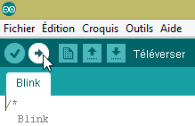 |
Le programme affiché est transféré (téléversé) sur l'Arduino avec le bouton [1]. Une fois transféré, il s'exécute et la led n° 13 se met à clignoter indéfiniment.
6.4. Connexion réseau de l'Arduino
L'Arduino ou les Arduinos et le PC hôte doivent être sur un même réseau privé :
 |
S'il n'y a qu'un Arduino, on pourra le relier au PC hôte par un simple câble RJ 45. S'il y en a plus d'un, le PC hôte et les Arduinos seront mis sur le même réseau par un mini-hub.
On mettra le PC hôte et les Arduinos sur le réseau privé 192.168.2.x.
- l'adresse IP des Arduinos est fixée par le code source. Nous verrons comment ;
- l'adresse IP de l'ordinateur hôte pourra être fixée comme suit :
- prendre l'option [Panneau de configuration\Réseau et Internet\Centre Réseau et partage] :
 |
- en [1], suivre le lien [Connexion au réseau local]
 | 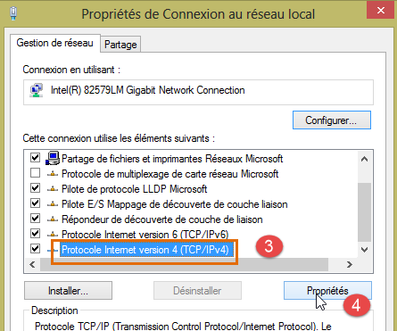 |
- en [2], visualiser les propriétés de la connexion ;
- en [4], visualiser les propriétés IP v4 [3] de la connexion ;
 |
- en [5], donner l'adresse IP [192.168.2.1] à l'ordinateur hôte ;
- en [6], donner le masque [255.255.255.0] au réseau ;
- valider le tout en [7].
6.5. Test d'une application réseau
Avec l'IDE, chargez l'exemple [Exemples / Ethernet / WebServer] :
/*
Web Server
A simple web server that shows the value of the analog input pins.
using an Arduino Wiznet Ethernet shield.
Circuit:
* Ethernet shield attached to pins 10, 11, 12, 13
* Analog inputs attached to pins A0 through A5 (optional)
created 18 Dec 2009
by David A. Mellis
modified 9 Apr 2012
by Tom Igoe
*/
#include <SPI.h>
#include <Ethernet.h>
// Enter a MAC address and IP address for your controller below.
// The IP address will be dependent on your local network:
byte mac[] = {
0xDE, 0xAD, 0xBE, 0xEF, 0xFE, 0xED };
IPAddress ip(192,168,1, 177);
// Initialize the Ethernet server library
// with the IP address and port you want to use
// (port 80 is default for HTTP):
EthernetServer server(80);
void setup() {
// Open serial communications and wait for port to open:
Serial.begin(9600);
while (!Serial) {
; // wait for serial port to connect. Needed for Leonardo only
}
// start the Ethernet connection and the server:
Ethernet.begin(mac, ip);
server.begin();
Serial.print("server is at ");
Serial.println(Ethernet.localIP());
}
void loop() {
// listen for incoming clients
EthernetClient client = server.available();
if (client) {
Serial.println("new client");
// an http request ends with a blank line
boolean currentLineIsBlank = true;
while (client.connected()) {
if (client.available()) {
char c = client.read();
Serial.write(c);
// if you've gotten to the end of the line (received a newline
// character) and the line is blank, the http request has ended,
// so you can send a reply
if (c == '\n' && currentLineIsBlank) {
// send a standard http response header
client.println("HTTP/1.1 200 OK");
client.println("Content-Type: text/html");
client.println("Connection: close");
client.println();
client.println("<!DOCTYPE HTML>");
client.println("<html>");
// add a meta refresh tag, so the browser pulls again every 5 seconds:
client.println("<meta http-equiv=\"refresh\" content=\"5\">");
// output the value of each analog input pin
for (int analogChannel = 0; analogChannel < 6; analogChannel++) {
int sensorReading = analogRead(analogChannel);
client.print("analog input ");
client.print(analogChannel);
client.print(" is ");
client.print(sensorReading);
client.println("<br />");
}
client.println("</html>");
break;
}
if (c == '\n') {
// you're starting a new line
currentLineIsBlank = true;
}
else if (c != '\r') {
// you've gotten a character on the current line
currentLineIsBlank = false;
}
}
}
// give the web browser time to receive the data
delay(1);
// close the connection:
client.stop();
Serial.println("client disconnected");
}
}
Cette application crée un serveur web sur le port 80 (ligne 30) à l'adresse IP de la ligne 25. L'adresse MAC de la ligne 23 est l'adresse MAC indiquée sur la carte réseau de l'Arduino.
La fonction [setup] initialise le serveur web :
- ligne 34 : initialise le port série sur lequel l'application va faire des logs. Nous allons suivre ceux-ci ;
- ligne 41 : le noeud TCP-IP (IP, port) est initialisé ;
- ligne 42 : le serveur de la ligne 30 est lancé sur ce noeud réseau ;
- lignes 43-44 : on logue l'adresse IP du serveur web ;
La fonction [loop] implémente le serveur web :
- ligne 50 : si un client se connecte au serveur web [server].available rend ce client, sinon rend null ;
- ligne 51 : si le client n'est pas null ;
- ligne 55 : tant que le client est connecté ;
- ligne 56 : [client].available est vrai si le client a envoyé des caractères. Ceux-ci sont stockés dans un buffer. [client].available rend vrai tant que ce buffer n'est pas vide ;
- ligne 57 : on lit un caractère envoyé par le client ;
- ligne 58 : ce caractère est affiché en écho sur la console de logs ;
- ligne 62 : dans le protocole HTTP, le client et le serveur échangent des lignes de texte.
- le client envoie une requête HTTP au serveur web en lui envoyant une série de lignes de texte terminée par une ligne vide,
- le serveur répond alors au client en lui envoyant une réponse et en fermant la connexion ;
Ligne 62, le serveur ne fait rien avec les entêtes HTTP qu'il reçoit du client. Il attend simplement la ligne vide : une ligne qui contient le seul caractère \n ;
- lignes 64-67 : le serveur envoie au client les lignes de texte standard du protocole HTTP. Elles se terminent par une ligne vide (ligne 67) ;
- à partir de la ligne 68, le serveur envoie un document à son client. Ce document est généré dynamiquement par le serveur et est au format HTML (lignes 68-69) ;
- ligne 71 : une ligne HTML particulière qui demande au navigateur client de rafraîchir la page toutes les 5 secondes. Ainsi le navigateur va demander la même page toutes les 5 secondes ;
- lignes 73-80 : le serveur envoie au navigateur client, les valeurs des 6 entrées analogiques de l'Arduino ;
- ligne 81 : le document HTML est fermé ;
- ligne 82 : on sort de la boucle while de la ligne 55 ;
- ligne 97 : la connexion avec le client est fermée ;
- ligne 98 : on logue l'événement dans la console de logs ;
- ligne 100 : on reboucle sur le début de la fonction loop : le serveur va se remettre à l'écoute des clients. Nous avons dit que le navigateur client allait redemander la même page toutes les 5 secondes. Le serveur sera là pour lui répondre de nouveau.
Modifiez le code en ligne 25 pour y mettre l'adresse IP de votre Arduino, par exemple :
Téléversez le programme sur l'Arduino. Lancez la console de logs (Ctrl-M) (M majuscule) :
 |  |
- en [1], la console de logs. Le serveur a été lancé ;
- en [2], avec un navigateur, on demande l'adresse IP de l'Arduino. Ici [192.168.2.2] est traduit par défaut comme [http://198.162.2.2:80];
- en [3], les informations envoyées par le serveur web. Si on visualise le code source de la page du navigateur, on obtient :
On reconnaît là, les lignes de texte envoyées par le serveur. Du côté Arduino, la console de logs affiche ce que le client lui envoie :
- lignes 2-9 : des entêtes HTTP standard ;
- ligne 10 : la ligne vide qui les termine.
Etudiez bien cet exemple. Il vous aidera à comprendre la programmation de l'Arduino utilisé dans le TP.
6.6. La bibliothèque aJson
Dans le TP à écrire, les Arduinos échangent des lignes de texte au format jSON avec leurs clients. Par défaut, l'IDE Arduino n'inclut pas de bibliothèque pour gérer le jSON. Nous allons installer la bibliothèque aJson disponible à l'URL [https://github.com/interactive-matter/aJson].
 |  |
- en [1], téléchargez la version zippée du dépôt Github ;
- décompressez le dossier et copiez le dossier [aJson-master] [2] dans le dossier [<arduino>/libraries] [3] où <arduino> est le dossier d'installation de l'IDE Arduino ;
 |  |  |
- en [4], renommez ce dossier [aJson] ;
- en [5], son contenu.
Maintenant, lancez l'IDE Arduino :
 |
Vérifiez que dans les exemples, vous avez désormais des exemples pour la bibliothèque aJson. Exécutez et étudiez ces exemples.
6.7. La tablette Android
Les exemples ont été testés avec la tablette Samsung Galaxy Tab 2.
Pour tester les exemples avec une tablette, vous devez d'abord installer le driver de celle-ci sur votre machine de développement. Celui de la tablette Samsung Galaxy Tab 2 peut être trouvé à l'URL [http://www.samsung.com/fr/support/usefulsoftware/KIES/] :
 |
Pour tester les exemples, vous aurez besoin de connecter la tablette à un réseau (wifi probablement) et de connaître son adresse IP sur ce réseau. Voici comment procéder (Samsung Glaxy Tab 2) :
- allumez votre tablette ;
- cherchez dans les applications disponibles sur la tablette (en haut à droite) celle qui s'appelle [paramètres] avec une icône de roue dentée ;
- dans la section à gauche, activez le wifi ;
- dans la section à droite, sélectionnez un réseau wifi ;
- une fois connecté au réseau, faites une frappe courte sur le réseau sélectionné. L'adresse IP de la tablette sera affichée. Notez-la. Vous allez en avoir besoin ;
Toujours dans l'application [Paramètres],
- sélectionnez à gauche l'option [Options de développement] (tout en bas des options) ;
- vérifiez qu'à droite l'option [Débogage USB] est cochée.
Pour revenir au menu, tapez dans la barre d'état en bas, l'icône du milieu, celle d'une maison. Toujours dans la barre d'état en bas,
- l'icône la plus à gauche est celle du retour en arrière : vous revenez à la vue précédente ;
- l'icône la plus à droite est celle de la gestion des tâches. Vous pouvez voir et gérer toutes les tâches exécutées à un moment donné par votre tablette ;
Reliez votre tablette à votre PC avec le câble USB qui l'accompagne.
Installez la clé wifi sur l'un des ports USB du PC puis connectez-vous sur le même réseau wifi que la tablette. Ceci fait, dans une fenêtre DOS, tapez la commande [ipconfig] :
Votre PC a deux cartes réseau et donc deux adresses IP :
- celle de la ligne 9 qui est celle du PC sur le réseau filaire ;
- celle de la ligne 17 qui est celle du PC sur le réseau wifi ;
Notez ces deux informations. Vous en aurez besoin. Vous êtes désormais dans la configuration suivante :
 |
La tablette aura à se connecter à votre PC. Celui est normalement protégé par un pare-feu qui empêche tout élément extérieur d'ouvrir une connexion avec le PC. Il vous faut donc inhiber le pare-feu. Faites-le avec l'option [Panneau de configuration\Système et sécurité\Pare-feu Windows]. Parfois il faut de plus inhiber le pare-feu mis en place par l'antivirus. Cela dépend de votre antivirus.
Maintenant, sur votre PC, vérifiez la connexion réseau avec la tablette avec une commande [ping 192.168.1.y] où [192.168.1.y] est l'adresse IP de la tablette. Vous devez obtenir quelque chose qui ressemble à ceci :
Les lignes 4-7 indiquent que la tablette d'adresse IP [192.168.1.y] a répondu à la commande [ping].
6.8. Installation d'un JDK
On trouvera à l'URL [http://www.oracle.com/technetwork/java/javase/downloads/index.html] (juin 2016), le JDK le plus récent. On nommera par la suite <jdk-install> le dossier d'installation du JDK.
 |
6.9. Installation du gestionnaire d'émulateurs Genymotion
L'entreprise [Genymotion] offre un émulateur Android performant. Celui-ci est disponible à l'URL [https://cloud.genymotion.com/page/launchpad/download/] (juin 2016).
Vous aurez à vous enregistrer pour obtenir une version à usage personnel. Téléchargez le produit [Genymotion] avec la machine virtuelle VirtualBox :

Nous appellerons par la suite <genymotion-install> le dossier d'installation de [Genymotion]. Lancez [Genymotion]. Téléchargez ensuite une image pour une tablette :
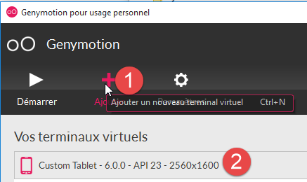 |
- en [1], ajoutez le terminal virtuel décrit en [2] ;
 |
- en [3], configurez le terminal ;
 |  |
- en [4-5], personnalisez le terminal pour votre environnement ;
- en [6], lancez le terminal virtuel ;
Si tout va bien, on obtient la fenêtre de l'émulateur Android :

Parfois, l'émulateur Android n'est pas lancé. Avec une machine windows, on pourra regarder les deux points suivants :
- vérifier que la machine virtuelle [Hyper-V] n'est pas installée. Si besoin est, la désinstaller [1-2] ;
 | 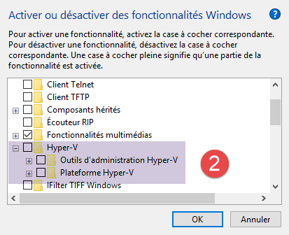 |
- puis dans l'assistant de configuration [Centre Réseau et partage] [1] :
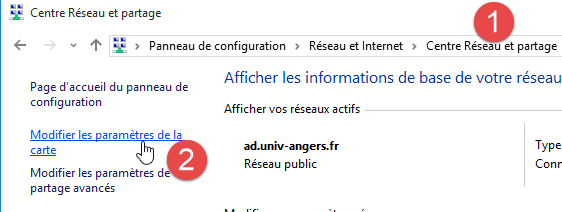 |
 |  |
- en [3], sélectionnez la ou les cartes associées à la machine virtuelle Virtual Box ;
 |
- vérifiez qu'en [6], le pilote pour VirtualBox est bien coché. Refaites l'opération pour toutes les cartes associées à la machine virtuelle Virtual Box ;
6.10. Installation de Maven
Maven est un outil de gestion des dépendances d'un projet Java et plus encore. Il est disponible à l'URL [http://maven.apache.org/download.cgi].
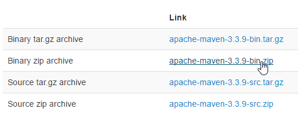 |
Téléchargez et dézippez l'archive. Nous appellerons <maven-install> le dossier d'installation de Maven.
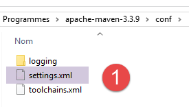 |
- en [1], le fichier [conf / settings.xml] configure Maven ;
On y trouve les lignes suivantes :
<!-- localRepository
| The path to the local repository maven will use to store artifacts.
|
| Default: ${user.home}/.m2/repository
<localRepository>/path/to/local/repo</localRepository>
-->
La valeur par défaut de la ligne 4, si comme pour moi votre {user.home} a un espace dans son chemin (par exemple [C:\Users\Serge Tahé]), peut poser problème à certains logiciels. On écrira alors quelque chose comme :
<!-- localRepository
| The path to the local repository maven will use to store artifacts.
|
| Default: ${user.home}/.m2/repository
<localRepository>/path/to/local/repo</localRepository>
-->
<localRepository>D:\Programs\devjava\maven\.m2\repository</localRepository>
et on évitera, ligne 7, un chemin qui contient des espaces.
6.11. Installation de l'IDE Android Studio
L'IDE Android Studio Community Edition est disponible à l'URL [https://developer.android.com/studio/index.html] (juin 2016) :
 |
Installez l'IDE puis lancez-le. En suivant la procédure [1-8], installez les éléments du SDK Manager utilisés par les exemples qui vont suivre. Si vous décidez d'installer des éléments plus récents, vous aurez probablement des avertissements d'Android Studio comme quoi la configuration des exemples référence des éléments du SDK qui n'existent pas dans votre environnement. Vous pourrez alors suivre les suggestions faites par l'IDE.
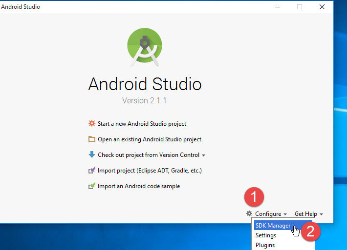 |
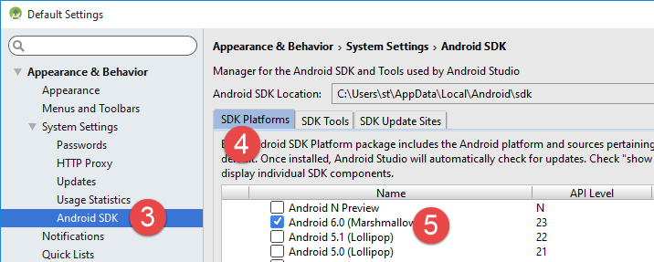 |
 |
- en [9], demandez à voir le détail des packages :
 |
- en [11] ci-dessus, les exemples ont utilisé le SDK Build-Tools 23.0.3 ;
- en [9-12] ci-dessous, indiquez le dossier où vous avez installé le gestionnaire d'émulateurs [Genymotion] ;
 |  |
- en [13-18], on configure la nature par défaut des projets ;
 |  |
- en [17], la valeur proposée par défaut est normalement la bonne;
- en [18], assurez-vous d'avoir un JDK 1.8;
Ci-dessous, en [19-26], on désactive la correction orthographique qui par défaut est pour la langue anglaise ;
 |  |
 |
- ci-dessous, en [27-28], choisissez le type de raccourcis clavier que vous souhaitez. Vous pouvez garder celui par défaut d'Intellij ou choisir celui d'un autre IDE auquel vous seriez plus habitués ;
 |
- ci-dessous, en [29-30], faites afficher les n°s de ligne du code;
 |
- ci-dessous, en [31-34], indiquez comment vous souhaitez gérez le 1er projet au lancement de l'IDE puis les projets suivants;
 |
Avec Android 2.1 (mai 2016), la technologie [Instant Run] pose parfois des problèmes. Dans ce document, nous l'avons inhibée :
 |  |
- en [3-4], tout a été désactivé ;
6.12. Utilisation des exemples
Les projets Android Studio des exemples sont disponibles ICI|. Téléchargez-les.
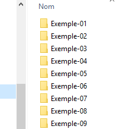 |
Les exemples ont été construits avec les éléments définis précédemment :
- JDK 1.8 ;
- Android SDK Platform 23 pour l'exécution;
Les outils du SDK suivants :
 |
Si votre environnement ne correspond pas au précédent, vous aurez à changer la configuration des projets. Cela peut être assez pénible. Dans un premier temps, il est probablement plus facile de reconstituer un environnement de travail analogue à celui ci-dessus.
Lancez Android Studio puis ouvrez le projet [exemple-07] par exemple :
 |  |
 |
- en [1-3], on ouvre le projet [Exemple-07] ;
- en [4], on vérifie le fichier [local.properties] ;
 |  |
- ligne 11 ci-dessus, mettez l'emplacement du SDK Manager d'Android <sdk-manager-install>. Vous pouvez trouver celui-ci en suivant la procédure [1-4] :
 |
Tous les exemples de ce document sont des projets Gradle configurés par un fichier [build.gradle] [1-2]:
 |
Le fichier [build.gradle] de l'exemple 07 est le suivant :
buildscript {
repositories {
mavenCentral()
mavenLocal()
}
dependencies {
// replace with the current version of the Android plugin
classpath 'com.android.tools.build:gradle:2.1.0'
// Since Android's Gradle plugin 0.11, you have to use android-apt >= 1.3
classpath 'com.neenbedankt.gradle.plugins:android-apt:1.8'
}
}
apply plugin: 'com.android.application'
apply plugin: 'android-apt'
def AAVersion = '4.0.0'
dependencies {
apt "org.androidannotations:androidannotations:$AAVersion"
compile "org.androidannotations:androidannotations-api:$AAVersion"
compile 'com.android.support:appcompat-v7:23.4.0'
compile 'com.android.support:design:23.4.0'
compile fileTree(dir: 'libs', include: ['*.jar'])
}
repositories {
jcenter()
}
apt {
arguments {
androidManifestFile variant.outputs[0].processResources.manifestFile
resourcePackageName android.defaultConfig.applicationId
}
}
android {
compileSdkVersion 23
buildToolsVersion "23.0.3"
defaultConfig {
applicationId "android.exemples"
minSdkVersion 15
targetSdkVersion 23
versionCode 1
versionName "1.0"
}
buildTypes {
release {
minifyEnabled false
proguardFiles getDefaultProguardFile('proguard-android.txt'), 'proguard-rules.pro'
}
}
compileOptions {
sourceCompatibility JavaVersion.VERSION_1_7
targetCompatibility JavaVersion.VERSION_1_7
}
}
Selon l'environnement Android (SDK et outils) que vous avez construit, vous pouvez être amené à changer les versions des lignes 8, 21, 22, 38, 39. Android Studio vous aide en faisant des suggestions. Le plus simple est de suivre celles-ci.
Les éléments du fichier [build.gradle] sont accessibles d'une autre façon:
 |  |
- les différents onglets de [3] reprennent les différentes valeurs du fichier [build.gradle]. On peut donc construire celui-ci de cette façon qui permet de s'affranchir des problèmes de syntaxe du fichier [build.gradle];
Un autre point à vérifier est le JDK utilisé par l'IDE [5] :
 |
En [6], vérifiez le JDK.
Tous les exemples sont des projets Gradle ayant des dépendances à télécharger. Pour ce faire, on pourra procéder ainsi :
 | 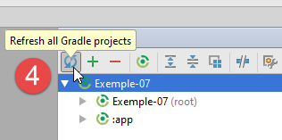  |
- en [5], on compile le projet ;
Une fois le projet sans erreurs, il faut créer une configuration d'exécution [1-8] :
 |  |
- en [8], on peut indiquer qu'on veut toujours utiliser le même terminal pour l'exécution. En général, cette option est cochée pour éviter d'avoir à préciser à chaque nouvelle exécution le terminal à utiliser. Ici, nous le laissons décoché parce que justement nous allons tester différents périphériques Android ;
- une fois la configuration d'exécution créée, on lance le gestionnaire des émulateurs Android [1-3] ;
 |  |
- si l'émulateur Android ne se lance pas, vérifiez les points mentionnés au paragraphe 6.11 ;
Pour lancer l'application sur l'émulateur, procédez comme suit [1-4] :
 |  |
- en [2], vous devez voir apparaître l'émulateur que vous avez auparavant lancé ;
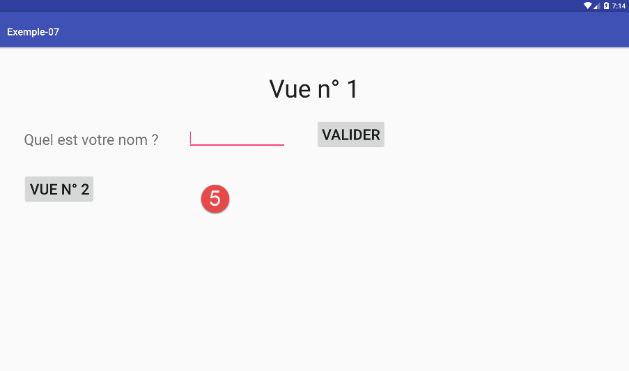 |
- en [5], la vue affichée par l'émulateur ;
Branchez maintenant une tablette Android sur un port USB du PC et exécutez l'application sur celle-ci :
 |
- en [6], sélectionnez la tablette Android et testez l'application.
En [7], nous avons des terminaux virtuels prédéfinis. Nous allons apprendre à en rajouter et à en éliminer.
 |
 |
Sur la copie d'écran ci-dessus, les terminaux proposés travaillent tous avec l'API 22. Nous les supprimons tous car nous voulons travailler avec l'API 23. Nous suivons la procédure [2-3] pour les terminaux à supprimer.

 |
- en [4-5], on rajoute une tablette ;
 |
- en [6], on choisit une API. Ci-dessus nous choisissons l'API 23 pour un Windows 64 bits ;
 |
- en [7], le résumé de la configuration faite ;
- en [8], une configuration plus avancée du terminal virtuel peut être faite ;
 |
Une fois l'assistant terminé, le terminal créé apparaît en [9].
Ceci fait, si on relance l'exécution de [Exemple-07], on a maintenant la fenêtre suivante :
 |
- en [1], le nouveau terminal virtuel apparaît ;
- en [2], on peut en créer de nouveaux ;
Faites des essais pour déterminer le terminal virtuel le plus adapté à votre poste. Dans ce document, les exemples ont été testés principalement avec l'émulateur Genymotion.
Quelque soit le terminal virtuel choisi, des logs sont affichés dans la fenêtre appelée [Logcat] [1-2] :

Consultez régulièrement ces logs. C'est là que seront signalées les exceptions qui ont fait planter votre programme.
Vous pouvez également déboguer votre programme avec les outils habituels du débogage :
 |  |
- en [2], on met un point d'arrêt en cliquant une fois sur la colonne à gauche de la ligne cible. Un nouveau clic annule le point d'arrêt ;
 |
- en [3], au point d'arrêt faire :
- [F6], pour exécuter la ligne sans entrer dans les méthodes si la ligne contient des appels de méthodes,
- [F5], pour exécuter la ligne en entrant dans les méthodes si la ligne contient des appels de méthodes,
- [F8], pour continuer jusqu'au prochain point d'arrêt ;
- [Ctrl-F2] pour arrêter le débogage ;
6.13. Installation du plugin Chrome [Advanced Rest Client]
Dans ce document, on utilise le navigateur Chrome de Google (http://www.google.fr/intl/fr/chrome/browser/ ). On lui ajoutera l'extension [Advanced Rest Client]. On pourra procéder ainsi :
- aller sur le site de [Google Web store] (https://chrome.google.com/webstore) avec le navigateur Chrome ;
- chercher l'application [Advanced Rest Client] :
 |
- l'application est alors disponible au téléchargement :
 |
- pour l'obtenir, il vous faudra créer un compte Google. [Google Web Store] demande ensuite confirmation [1] :
 | 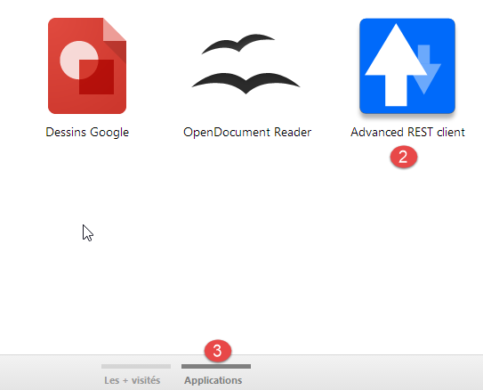 |
- en [2], l'extension ajoutée est disponible dans l'option [Applications] [3]. Cette option est affichée sur chaque nouvel onglet que vous créez (CTRL-T) dans le navigateur.
6.14. Gestion du jSON en Java
De façon transparente pour le développeur le framework [Spring MVC] utilise la bibliothèque jSON [Jackson]. Pour illustrer ce qu'est le jSON (JavaScript Object Notation), nous présentons ici un programme qui sérialise des objets en jSON et fait l'inverse en désérialisant les chaînes jSON produites pour recréer les objets initiaux.
La bibliothèque 'Jackson' permet de construire :
- la chaîne jSON d'un objet : new ObjectMapper().writeValueAsString(object) ;
- un objet à partir d'un chaîne jSON : new ObjectMapper().readValue(jsonString, Object.class).
Les deux méthodes sont susceptibles de lancer une IOException. Voici un exemple.
 |
Le projet ci-dessus est un projet Maven avec le fichier [pom.xml] suivant ;
<?xml version="1.0" encoding="UTF-8"?>
<project xmlns="http://maven.apache.org/POM/4.0.0"
xmlns:xsi="http://www.w3.org/2001/XMLSchema-instance"
xsi:schemaLocation="http://maven.apache.org/POM/4.0.0 http://maven.apache.org/xsd/maven-4.0.0.xsd">
<modelVersion>4.0.0</modelVersion>
<groupId>istia.st.pam</groupId>
<artifactId>json</artifactId>
<version>1.0-SNAPSHOT</version>
<dependencies>
<dependency>
<groupId>com.fasterxml.jackson.core</groupId>
<artifactId>jackson-databind</artifactId>
<version>2.3.3</version>
</dependency>
</dependencies>
</project>
- lignes 12-16 : la dépendance qui amène la bibliothèque 'Jackson' ;
La classe [Personne] est la suivante :
package istia.st.json;
public class Personne {
// data
private String nom;
private String prenom;
private int age;
// constructeurs
public Personne() {
}
public Personne(String nom, String prénom, int âge) {
this.nom = nom;
this.prenom = prénom;
this.age = âge;
}
// signature
public String toString() {
return String.format("Personne[%s, %s, %d]", nom, prenom, age);
}
// getters et setters
...
}
La classe [Main] est la suivante :
package istia.st.json;
import com.fasterxml.jackson.databind.ObjectMapper;
import java.io.IOException;
import java.util.HashMap;
import java.util.Map;
public class Main {
// l'outil de sérialisation / désérialisation
static ObjectMapper mapper = new ObjectMapper();
public static void main(String[] args) throws IOException {
// création d'une personne
Personne paul = new Personne("Denis", "Paul", 40);
// affichage Json
String json = mapper.writeValueAsString(paul);
System.out.println("Json=" + json);
// instanciation Personne à partir du Json
Personne p = mapper.readValue(json, Personne.class);
// affichage personne
System.out.println("Personne=" + p);
// un tableau
Personne virginie = new Personne("Radot", "Virginie", 20);
Personne[] personnes = new Personne[]{paul, virginie};
// affichage Json
json = mapper.writeValueAsString(personnes);
System.out.println("Json personnes=" + json);
// dictionnaire
Map<String, Personne> hpersonnes = new HashMap<String, Personne>();
hpersonnes.put("1", paul);
hpersonnes.put("2", virginie);
// affichage Json
json = mapper.writeValueAsString(hpersonnes);
System.out.println("Json hpersonnes=" + json);
}
}
L'exécution de cette classe produit l'affichage écran suivant :
De l'exemple on retiendra :
- l'objet [ObjectMapper] nécessaire aux transformations jSON / Object : ligne 11 ;
- la transformation [Personne] --> jSON : ligne 17 ;
- la transformation jSON --> [Personne] : ligne 20 ;
- l'exception [IOException] lancée par les deux méthodes : ligne 13.
6.15. Installation de [WampServer]
[WampServer] est un ensemble de logiciels pour développer en PHP / MySQL / Apache sur une machine Windows. Nous l'utiliserons uniquement pour le SGBD MySQL.
 |  |
- sur le site de [WampServer] [1], choisir la version qui convient [2],
- l'exécutable téléchargé est un installateur. Diverses informations sont demandées au cours de l'installation. Elles ne concernent pas MySQL. On peut donc les ignorer. La fenêtre [3] s'affiche à la fin de l'installation. On lance [WampServer],
 |  |
- en [4], l'icône de [WampServer] s'installe dans la barre des tâches en bas et à droite de l'écran [4],
- lorsqu'on clique dessus, le menu [5] s'affiche. Il permet de gérer le serveur Apache et le SGBD MySQL. Pour gérer celui-ci, on utiliser l'option [PhpPmyAdmin],
- on obtient alors la fenêtre ci-dessous,

Nous donnerons peu de détails sur l'utilisation de [PhpMyAdmin]. Nous montrons dans le document comment l'utiliser.